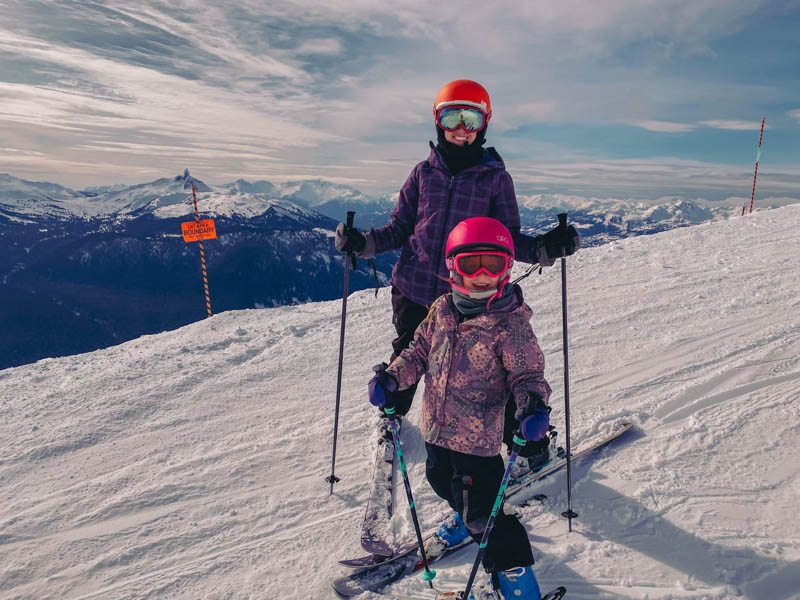
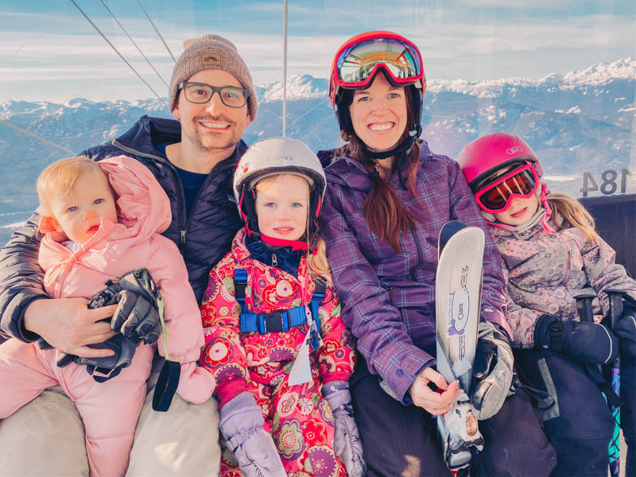

Late last month we spent five glorious days vacationing spending time in Whistler. It was our family + au pair (Lilly) and I think we finally have this ski vacation thing down. We’ve gone to Whistler for ski trips three times now (here’s a quick post from last time, 2 years ago), and Park City once.
Here are some tips for you if you are planning a (winter) trip to Whistler with kids:
+ Plan ahead! Ski vacations aren’t the time to be spontaneous. I would look at your schedule and figure out how many days you want to ski and how many you want to just hang out in the snow and explore the area. Then I’d sign up for childcare (if needed).
+ Take advantage of Whistler’s Childcare if your kid is over 18 months old for about $125 per day.
+ Take advantage of Whistler Babysitting if your kid is under 18 months old or if you have multiple kids. This year the rate is $20 per hour + $4 extra per hour per extra kid. This is a lot of money, for sure, but it’s a bit cheaper than putting two kids in Whistler’s childcare, which is what we would have had to do two years ago when Clara was 3 and Isabelle was almost-2.
+ Take advantage of the ski school program for kids over 3 years old. Both Isabelle and Clara did that this year and they had a blast. The 3-4 year olds spent some time on the mountain and some time inside reading and playing games. Clara (in the 5-6 year old class) spent all day on the mountain with a break for lunch. This program is about $200 per day (per kid).

+ Stay at an Airbnb or Vrbo. With six of us on this trip we needed a bigger place with a kitchen, so we booked a place through Airbnb. (Use this link for a discount off your first trip!) I also always check Vrbo because a lot of times properties are listed through both places and it’s good to compare the fees and cancellation policies of both sites before deciding which one to book with.
+ Book a rental property should be near Creekside. This might be controversial, but I’m really glad we stayed near Creekside. This is because it was only a 5 minute drive to Whistler Village, but only about 20 seconds from the Creekside Village area, where there is a gondola and a ski school drop-off. Basically, it has everything you need without the long lines and reallllly long walk from parking to the mountain. Pro tip: if you have a roof box on your car, you qualify as an oversized vehicle and can park in the oversize lot parking spaces in the Creekside Village. It’s free!
+ Eat at Creekbread for the best pizza. We ordered takeout to avoid waiting for a table. I got mushroom pizza and it was amazing. Everyone should order their own pizza and then you have lunch or dinner for the next day, too! While we’re on the topic of food, make sure you stop by Bred at Creekside to get your daily latte and maybe a plant-based pastry or entire loaf of bread. It’s the cutest place and everything is delicious. Another (affordable!) place we love is Hunter Gather and for more of a splurge I like Crepe Montagne. My advice is always and forever to do takeout, because three kids (5 and under!) is a nightmare in a restaurant.
+ Rent your skis a day ahead of time. If you need to rent skis, reserve them online and pick them up after 3pm the day before you need them. You won’t get charged for the extra day and then you don’t need to wait precious ski time waiting in lines.
+ Head to the “Magic Chair” chairlift on Blackcomb Mountain with young skiers. It’s a slow, short lift for only beginners and it leads to a green run that anyone can do. Plus, it’s right by a lodge and parking lots 7 and 8 so it’s perfect for young families. We didn’t have to walk more than 10 feet with all of our gear, and at one point Tim and Phoebe sat in the lodge and waited for me and the other two girls while we were skiing a bit. Then when I needed help he ‘rescued’ us by just walking down the slope… it’s a seriously accessible place to learn to ski!

+ Learn to ski on Whistler Mountain by the Olympic Chair area. The perk to this area is that you get to take the Whistler Village Gondola to the beginner’s area, and my kids love nothing more than a gondola ride! The cons are that the parking near Whistler mountain is far from the slopes so it is a HIKE before and after skiing. Then it just takes a while to get on the gondola and get to the beginner’s area. But once you’re there it’s awesome because there are multiple magic carpets and a slow, short lift to go a little further up the mountain. Plus, Clara and I could go further up the mountain and then ski down to the beginner’s area a few times while Tim and Isabelle hung out.
+ Check out Whistler Village – specifically the small sledding hill, ice skating rink, and Family Apres days (on Mondays and Wednesdays from 3-6pm). During the Family Apres days there are free snacks and hot chocolate, as well as some live kid-friendly music/entertainment which our girls were very into. My girls also loved the nearby playground. Bring your own sleds and skates and prepare to be out there a few hours! Luckily there are plenty of snack and coffee shops nearby so you can warm up if necessary.
+ Have fun! Once you’re on the mountain and everyone is where they’re supposed to be, have a blast! The hard part is all of the logistics, the easy part is skiing and having a blast with your family, creating memories you can all cherish!
Ski vacations with little kids can be intimidating, but we had a ton of fun! We took the kids skiing way more than we thought we would, because they kept wanting to get back out there! I loved that. We ended up skiing for 4 days total. Two days Tim and I went out together while the girls did ski school and the other days we skied together as a family. It was the perfect mix of fun, adventure, and family togetherness.